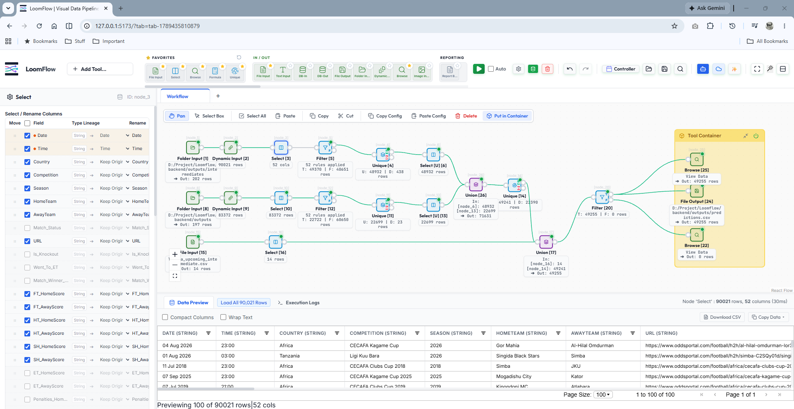

Build and execute complex Directed Acyclic Graphs (DAGs) locally. Experience sub-millisecond execution times with multi-threaded Polars DataFrames, seamless Gemini Multimodal AI orchestration, and an embedded Python IDE.

screenshot.png in the repository root beside index.html so it renders directly here.
Architected with High-Performance Open Source Foundations
Modeled for Analysts. Built for Engineers.
LoomFlow translates enterprise Alteryx workflows into modern open-source software, pairing visual clarity with high-speed execution.
Inspect column lineage in real-time. Dynamically cast strings to dates, rename headers, and prune unnecessary fields before feeding into heavy downstream calculations.
Select [Node 3]Alteryx-style tool categories: Favorites, In/Out, Preparation, Transform, Join, and Reporting. Drag Dynamic Inputs, Formulas, and Filters straight onto the canvas.
+ Add Tool / ShortcutsGroup related operational branches inside Tool Containers. Seamlessly union parallel streams, apply complex multi-rule filters, and deduplicate with Unique nodes.
Tool Container [26, 27]Click any node to immediately view cached row profiles and schema types. Inspect 90,000+ rows in 30ms, copy tables to clipboard, or export direct to Parquet/CSV.
Load 90,021 RowsStandard Python ETL suites choke on memory limits and single-core bottlenecks. LoomFlow is built natively on Polars and Rust execution cores to ensure your workstation remains responsive even when crunching millions of rows.
Up to 57x faster execution on identical hardware.
The Four Pillars of Data Pipeline Confidence
Inspired by the proven governance principles of Alteryx ("VURA"), reimagined for modern open-source stacks.
Eliminate invisible Python script errors. Build explicit visual DAGs where upstream and downstream column lineage is traceable at every point.
Self-documenting workflows allow analysts, data scientists, and business stakeholders to visually understand exact business logic at a glance.
Deterministic execution powered by in-memory Polars. Run the exact same pipeline locally across millions of records without environment drift.
Per-node row throughput counters, automated type inference logs, and intermediate Parquet snapshots provide full governance on your own PC.
Run LoomFlow completely locally. Single script execution resolves virtual environments and dependencies automatically.
# 1. Clone the repository
git clone https://github.com/cardchase/loomflow.git
cd loomflow
# 2. Run the automated setup script
.\run.ps1
# 3. Open your browser
→ http://localhost:5173
# 1. Clone the repository
git clone https://github.com/cardchase/loomflow.git
cd loomflow
# 2. Make script executable and run
chmod +x run.sh && ./run.sh
# 3. Open your browser
→ http://localhost:5173
LoomFlow is open source and community driven. Star the repository, report issues, and help us build the premier local-first alternative to proprietary ETL.